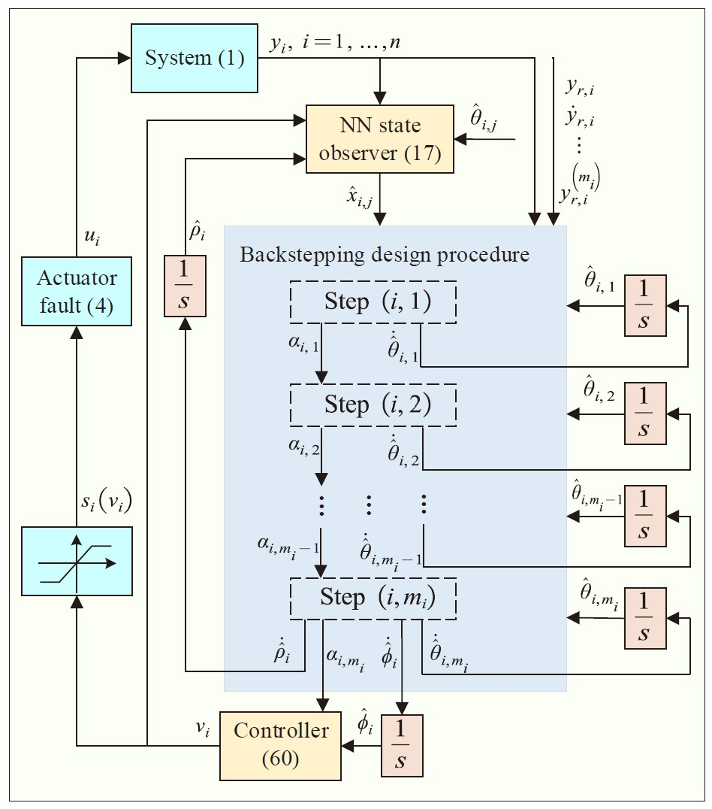
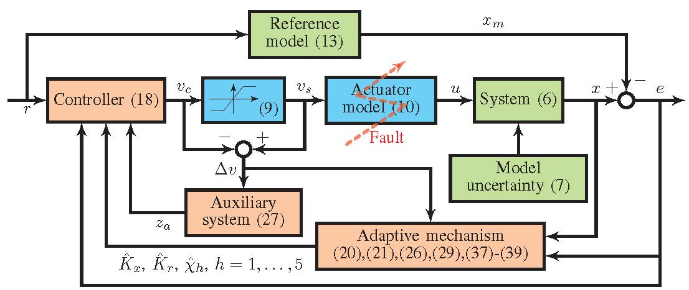
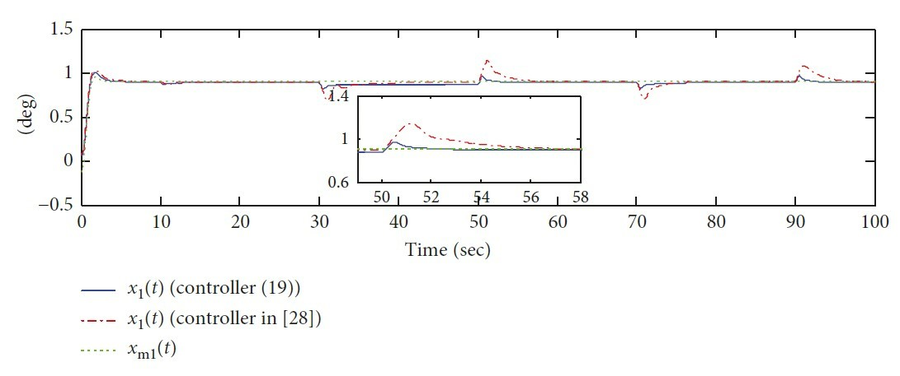
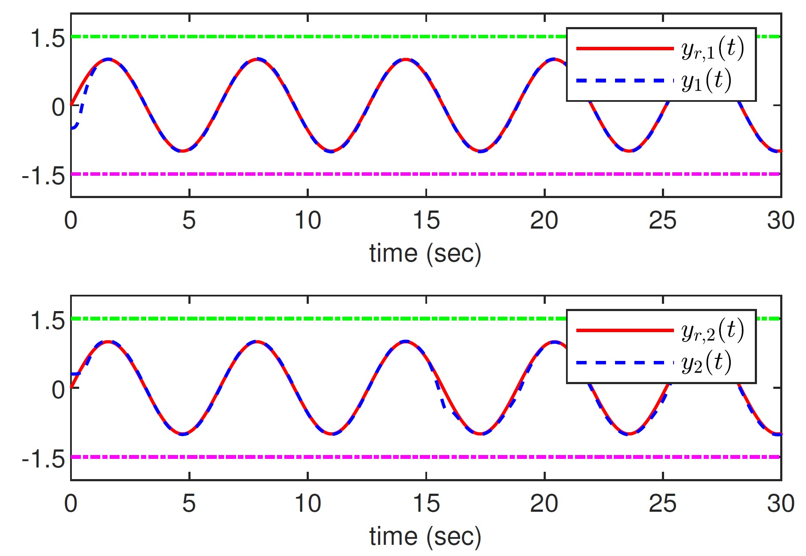
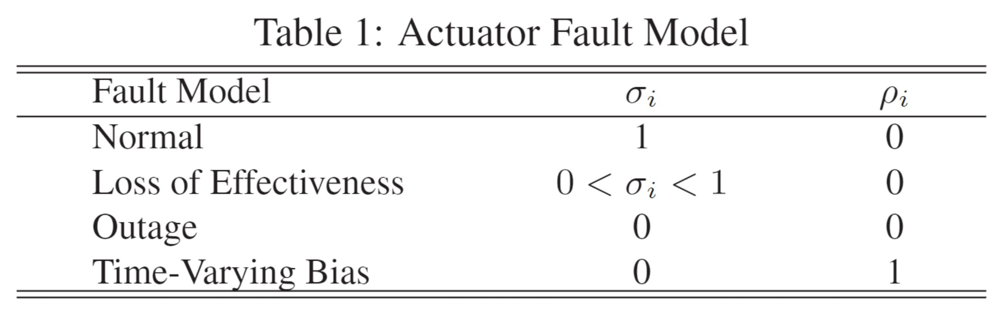

I received the M.S. degree in control engineering from Huazhong University of Science and Technology where I worked in the field of adaptive fault-tolerant control (Master Thesis), advised by Prof. Huijin Fan. Before that, I received the B.S. degree in automation from China University of Petroleum, Qingdao, China.
Publications:
|  |
Xinpeng Fang, Huijin Fan, Lei Liu, Bo Wang Adaptive Fixed-Time Fault-Tolerant Control of Saturated MIMO Nonlinear Systems with Time-Varying State Constrains Nonlinear Dynamics, 2022 [Paper] |
|  |
Xinpeng Fang, Huijin Fan, Wei Wang, Lei Liu, Bo Wang, Zhongtao Cheng Adaptive Finite-Time Fault-Tolerant Control of Uncertain Systems With Input Saturation IEEE Transactions on Systems, Man, and Cybernetics: Systems, 2022 [Paper] |
|  |
Xinpeng Fang, Huijin Fan, Lei Liu Robust Finite-Time Tracking for Uncertain Linear Systems with Actuator Faults Complexity, 2020 [Paper] |
|  |
Xinpeng Fang, Huijin Fan, Lei Liu, Bo Wang, Wenqiang Hu Decentralized Adaptive FTC of Interconnected Nonlinear Systems with Actuator Faults and Output Constraints The 34th Chinese Control and Decision Conference (CCDC), 2022. Finalist for Zhang Si-Ying Outstanding Youth Paper Award [Paper] |

|
Huijin Fan, Xinpeng Fang, Wei Wang Adaptive Finite-Time Varying Fault Compensation Tracking Control for Linear Systems The 4th Information Technology, Networking, Electronic and Automation Control Conference (ITNEC), 2020 [Paper] |
|  |
Xinpeng Fang, Huijin Fan, Lei Liu Robust Adaptive Finite-Time Fault-Tolerant Tracking Control for Uncertain Systems The 39th Chinese Control Conference (CCC), 2020 [Paper] |
Projects:
|
Xinpeng Fang, role: PI Research on Data/Model Fusion Based Fault-Tolerant Control for Reusable Launch Vehicle Fundamental Research Funds for the Central Universities, Grant 2021JYCXJJ040 |
Services as a Reviewer:
Regular reviewers for a number of international journals and conferences.
Journals: IEEE Transactions on Cybernetics, IEEE/CAA Journal of Automatica Sinica, ISA Transactions
Conferences: IECON 2020, ICIEA 2020, CCDC 2021, CAC 2021, CCDC 2022, DDCLS 2022, MIM 2022, ICGNC 2022
Regular reviewers for a number of international journals and conferences.
Journals: IEEE Transactions on Cybernetics, IEEE/CAA Journal of Automatica Sinica, ISA Transactions
Conferences: IECON 2020, ICIEA 2020, CCDC 2021, CAC 2021, CCDC 2022, DDCLS 2022, MIM 2022, ICGNC 2022